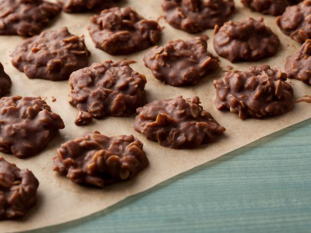

Peanut Butter-Chocolate No-Bake Cookies

These cookies are a quick and easy dessert that is perfect for any occasion.
They are made with just a few simple ingredients, and they do not require any baking.
The cookies are chewy and chocolaty, and they are sure to satisfy your sweet tooth.
Ingredients
- 2 cups sugar
- 1/2 cup milk
- 1 stick (8 tablespoons) unsalted butter
- 1/4 cup unsweetened cocoa powder
- 3 cups old-fashioned rolled oats
- 1 cup smooth peanut butter
- 1 tablespoon pure vanilla extract
- Large pinch kosher salt
Steps
- Line a baking sheet with wax paper or parchment.
- Bring the sugar, milk, butter and cocoa to a boil in a medium saucepan over medium heat, stirring occasionally, then let boil for 1 minute.
Remove from the heat. Add the oats, peanut butter, vanilla and salt, and stir to combine.
- Drop teaspoonfuls of the mixture onto the prepared baking sheet, and let sit at room temperature until cooled and hardened, about 30
minutes. Refrigerate in an airtight container for up to 3 days.